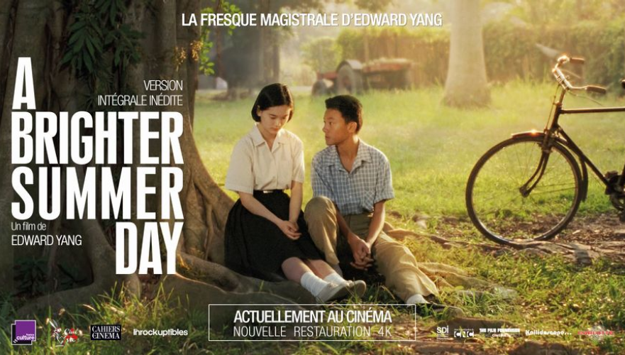

Description
A Brighter Summer Day (en chinois : « 牯嶺街少年殺人事件 ») est un film taïwanais réalisé par Edward Yang en 1991.
A Brighter Summer Day (en chinois : « 牯嶺街少年殺人事件 ») est un film taïwanais réalisé par Edward Yang en 1991.
Le film met notamment en scène pour la première fois l’acteur taïwanais Chang Chen.
